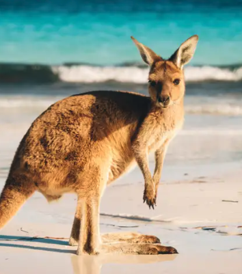

France
Discover the ultimate French getaway with our exclusive vacation package! Explore the romantic streets of Paris, where iconic landmarks like the Eiffel Tower and charming cafés await you. Then, soak up the sun on the stunning beaches of Nice, nestled along the sparkling French Riviera. Finally, immerse yourself in the rich culture and picturesque landscapes of southern France, with its vineyards, medieval villages, and mouthwatering cuisine. This unforgettable adventure blends history, relaxation, and vibrant local life — all in one perfect trip. Ready to say “Oui” to your dream vacation?
- Duration - 12 Days
- Base Fare - $2,650 per Person
What's Included?
- Round-Trip airfare from your location to France
- Accomodations at a 5-Star Hotel
- Optional Tour Guides, whenever and wherever for no extra cost
- Transportation within your destinations
- Fun activites for everyone, personalized by YOU!
Itinerary
- Day One - Arrive in Paris
- Day Two - See Pairisian Landmarks
- Day Three - See Montmartre and Explore Local Life
- Day Four - Travel to Nice
- Day Five - Nice and the French Riviera
- Day Six - Day Trip to Cannes
- Day Seven - Travel to Southern France Countryside
- Day Eight - Explore Medieval Villages
- Day Nine - Day Trip to Avignon
- Day Ten - Return to Nice
- Day Eleven - Day Trip to Monaco
- Day Twelve - Departure from Nice
Explore ->
South Africa

Get ready for an unforgettable adventure with our South Africa vacation package! Start in vibrant Cape Town, where stunning beaches meet breathtaking mountain views. Then, experience the dynamic culture and history of Johannesburg before diving into the heart of South Africa’s wild beauty. Enjoy thrilling safari excursions to spot the Big Five, relax on pristine shores, and embark on an oceanic adventure exploring rich marine life. This trip offers the perfect mix of excitement, nature, and culture—your dream escape awaits!
- Duration - 14 Days
- Base Fare - $3,000 per Person
What's Included?
- Round-Trip airfare from your location to South Africa
- Accomodations at a 5-Star Hotel
- Optional Tour Guides, whenever and wherever for no extra cost
- Transportation within your destinations
- Fun activites for everyone, personalized by YOU!
Itinerary
- Day One - Arrive in Cape Town
- Day Two - Cape Town Highlights
- Day Three - Cape Peninsula Tour
- Day Four - Winelands & Beaches
- Day Five - Flight Cape Town → Johannesburg
- Day Six - Soweto Township Tour & Local Culture
- Day Seven - Travel Johannesburg → Safari Lodge
- Day Eight - Safari Game Drives
- Day Nine - Safari & Relaxation
- Day Ten - Travel Safari → Durban
- Day Eleven - Marine Adventure & Culture in Durban
- Day Twelve - Day Trip to Drakensberg Mountains
- Day Thirteen - Leisure Day in Durban
- Day Fourteen - Departure from Durban
Explore ->
Austrailia and New Zealand
Embark on the adventure of a lifetime with our incredible Australia and New Zealand vacation package! Explore the iconic cities of Sydney and Melbourne, then discover the wild beauty of Tasmania and Perth’s stunning coastlines. Cross over to New Zealand to experience the vibrant culture of Auckland, the charm of Christchurch, and the thrilling outdoor playground of Queenstown. From sun-kissed beaches and rugged outbacks to breathtaking oceans and unique wildlife, this trip is packed with unforgettable sights and experiences. Ready to dive into a world of adventure, nature, and fun? Let’s make it happen!
- Duration - 21 Days
- Base Fare - $4,890 per Person
What's Included?
- Round-Trip airfare from your location to Austrailia and New Zealand
- Accomodations at a 5-Star Hotel
- Optional Tour Guides, whenever and wherever for no extra cost
- Transportation within your destinations
- Fun activites for everyone, personalized by YOU!
Itinerary
- Day One - Arrive in Sydney
- Day Two - Exploring Sydney
- Day Three - Day Trip to the Blue Mountains
- Day Four - Fly to Melbourne
- Day Five - Explore Melbourne
- Day Six - Great Ocean Road Tour
- Day Seven - Leisure Day in Austrailia
- Day Eight - Fly to Hobart in Tasmania
- Day Nine - Freycinet National Park
- Day Ten - Day trip to Bruny Island
- Day Eleven - Fly to Perth
- Day Twelve - Day trip: Rottnest Island
- Day Thirteen - Enjoy Perth
- Day Fourteen - Fly to Auckland
- Day Fifteen - Day trip: Waiheke Island
- Day Sixteen - Explore Auckland
- Day Seventeen - Fly to Christchurch
- Day Eighteen - Day trip to Akaroa
- Day Ninteen - Fly to Queenstown
- Day Twenty - Queenstown Exploration and Adventure
- Day Twenty One - Departure from Queenstown